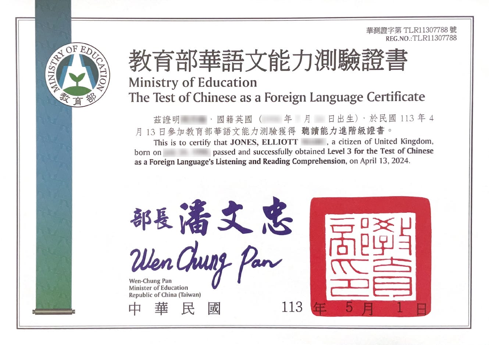

Elliott Jones
雙語技術寫作專員


在台灣與大陸近十年，中文水平等於 TOCFL 高階級。曾於上海為英國政府工作，並服務多家台灣頂尖科技公司。
我第一次挑戰 TOCFL 考試
發布於2024/4/17，由 Elliott Jones 撰寫

4月13日，我參加了在台北市大安區的中國文化大學舉行的 TOCFL（華語文能力測驗）聽力與閱讀考試。
TOCFL 是台灣為非母語人士設計的華語能力測驗。
在考試前的一兩個月，我預約了這次考試，這是我第一次參加 TOCFL 考試。
目標
儘管我多年來在家裡與妻子以及在工作中與同事只使用中文交流，我相信這種經驗已經讓我的日常會話能力接近 TOCFL 等級 5，但由於我的閱讀速度較慢，以及缺乏正式學術中文的接觸（這通常出現在高級 TOCFL 考題中），我的目標是達到等級 4。這種語言並不常見於現實生活中，甚至在工作會議中也很少遇到。
以下是我製作的一張比較 TOCFL 與 HSK 3.0 和 HSK 2.0 的圖表。

準備
由於我從未在正規學校學習過中文，完全是自學的，因此我決定使用以前學習中文的方式準備考試——主要是通過應用程式。
單字卡
我的主要擔憂是我的字形辨識和閱讀速度不足，所以我註冊了 Hack Chinese 的 21 天免費試用。這個平台本質上是更精緻版的 Anki 或 Pleco 單字卡，有許多預設的單字列表。雖然我覺得例句有點奇怪（而且不總是有繁體中文版本），字典搜尋功能稍顯不足，定義也未必按最常用到最少用排序，但對我來說，Hack Chinese 的真正價值在於其進度追蹤功能。例如，我標記了數千個我已知的單字為“已掌握”，然後將 TOCFL 等級 4 單字列表加入到我的學習清單。這讓我能看到自己已經掌握了多少等級 4 單字，還剩下多少未學習。系統會自動將新的等級 4 單字加入我的每日學習課程。雖然我認為這種學習方式效率不高，但由於我已經知道大多數等級 4 單字的意思，只需要記住字形，對我來說非常有效。
然而，在考試前的一個半月內，我並沒有太多時間使用 Hack Chinese。我們剛買了一間新公寓，我忙於裝修，一直到考試日期。到考試時，Hack Chinese 顯示我仍有超過一千個 TOCFL 等級 4 單字未能認出。這在考試中成為一個劣勢。
播客
我還聽了幾集播客，主要是來自 Dashu Mandarin 和 Learn Taiwanese Mandarin。在我看來，Learn Taiwanese Mandarin 對學習中文更有幫助，因為主持人對詞彙和內容解釋得更詳細。然而，對我來說內容太過基礎。我能理解平均一集節目內容的 99.9%，這是一種很好的可理解輸入方式，但對我來說並沒有學到新知識。而 Dashu Mandarin 更符合我目前的水平，介紹了一些台灣不常使用但在 TOCFL 考試中仍然出現的詞彙。
分級讀物
我準備的第三種資源是 Du Chinese。我認為 Du Chinese 的高級中級和高級內容與 TOCFL 考試中 Band B（包含等級 3 和等級 4）的題目類型相近。閱讀是我最弱的技能，所以挑戰 Du Chinese 的高級內容對我來說相當困難。由於花了很多時間裝修新公寓，我並沒有太多時間專注於 Du Chinese，但總體上我對這個平台非常滿意。
模擬考試
我還完成了兩次 Band B 模擬考試，並且在兩次考試中都達到了等級 4 的成績。考試前幾天，我發現了一個 CAT 模擬考試，這在之前是不存在的。CAT（電腦適性測驗） 會根據你的回答自動調整題目難度，並在考試結束時確定你的等級。這種形式的優勢是所有考生無需事先知道自己的水平，因為大家考的是同一套試題。4月13日的考試便是 CAT 測驗。
考試過程
考場與考試教室
考試於2024年4月13日上午10點在中國文化大學進修學院的大安區校區舉行。我按照 TOCFL 網站的建議提早到達，但被告知無法在10點前辦理報到或進入考場。我在樓下等到時間後才上三樓簽到。令人驚訝的是，所有考生的中英文全名都被張貼在一張大海報上供人查看。雖然感覺有點奇怪，但這讓我能夠估算考生的種族組成。在我所在的考場，約80–90%的考生是越南人，其餘大多是日本人，除了我和兩名非亞洲女性外。
考場環境對專注度不太友好。地板會嘎吱作響，監考人員經常在教室內走動，增加干擾。此外，考生結束考試時常常拖著椅子離開，聲音很大。下一次考試，我計劃詢問是否可以攜帶耳塞。
CAT 測驗模式
CAT 測驗會根據你的答案調整題目難度。在我的經驗中，這讓考試變得更難且準確性下降。最初的題目感覺像是 Band B，但回答正確後，出現了似乎屬於 Band C 的題目。當我可能答錯 Band C 題目時，系統並沒有恢復到 Band B 題目（我的目標水平），而是給出 Band A 題目。這種難度波動的模式持續整場考試。不幸的是，我覺得遇到的 Band B 題目很少，儘管我的目標是該等級。Band C 題目需要閱讀長篇內容，這耗盡了我的精力，影響了之後對 Band B 題目的表現。看來目前大多數 TOCFL 考試都使用 CAT 模式。
我的失誤
雖然我在考試前20分鐘上了廁所，但在閱讀部分開始約10分鐘後又想上廁所。這嚴重影響了我的注意力，迫使我在最後三到四題上隨機作答。我希望聽力與閱讀部分之間能有短暫的廁所休息時間。下次考試，我會避免在考試前幾小時喝水。
成績
在 CAT 測驗結束時，系統會即時顯示你的分數和等級。我聽力得了 550 分，閱讀得了 560 分。要通過等級 4，我需要聽力達到 555 分，閱讀達到 570 分，所以我分別差了 5 分和 10 分。雖然上廁所的需要可能讓我失去了閱讀所需的分數，但聽力成績依然不足以讓我通過等級 4。
{kind=link}

未來計劃
我的下一次 TOCFL 考試（也是 CAT 模式）安排在2024年5月18日，我將再次挑戰等級 4。此外，我還在2024年5月19日安排了 Band C 的口說和寫作測驗。本來我希望能參加 Band B 的口說和寫作考試，但目前尚未開放。由於我的口說能力非常好，且口音非常接近母語，我有一點通過 Band C 口說測驗的可能性。然而，我很可能無法通過 Band C 的寫作測驗。